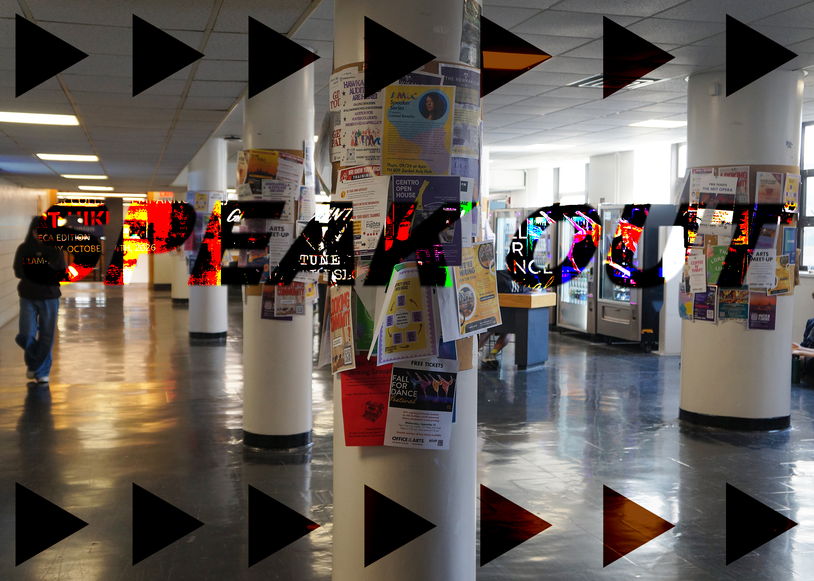

Aleksandra Kabischer is a Brooklyn-based student artist. Her recent works focus on developing fundamental skills while exploring current political affairs. Part of the process begins with thumbnail sketches and a plan for execution, then progressing into taking photos, developing references, and numerous color swatches. She develops her ideas further and research historical context to further deepen her work.
She remains fluid in her usage of media, as she is a mixed-media artist. She will often take inspiration from film, life, and personal experiences. A reoccurring pattern in all of her works is an emphasis on vibrant color.
